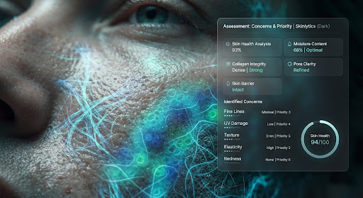

Identify Your Concerns
Select the skin conditions you want to address. You can rank them by priority in the next step.

Deep Scan Insight
Our algorithm analyzes 40+ biometric markers to validate your concerns.
sort Your Priorities
Top 3 Highlighted
1
Dark Spots
drag_indicator
2
Fine Lines
drag_indicator
3
Texture
drag_indicator
Drag items to change their rank order